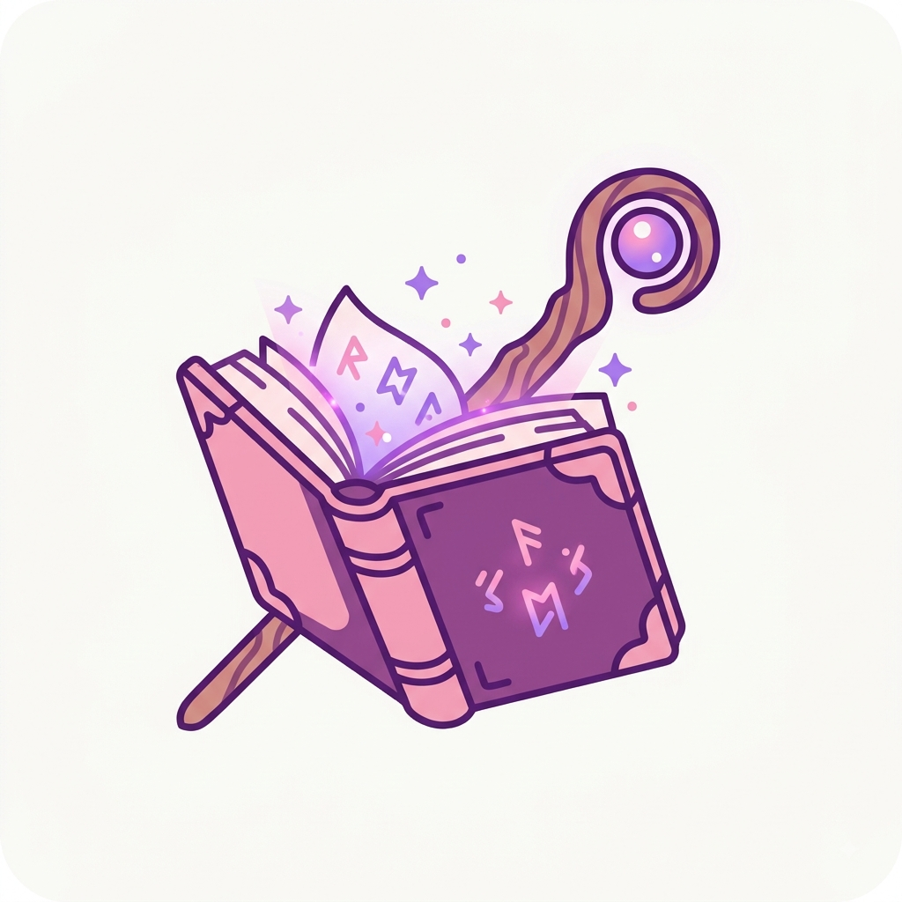
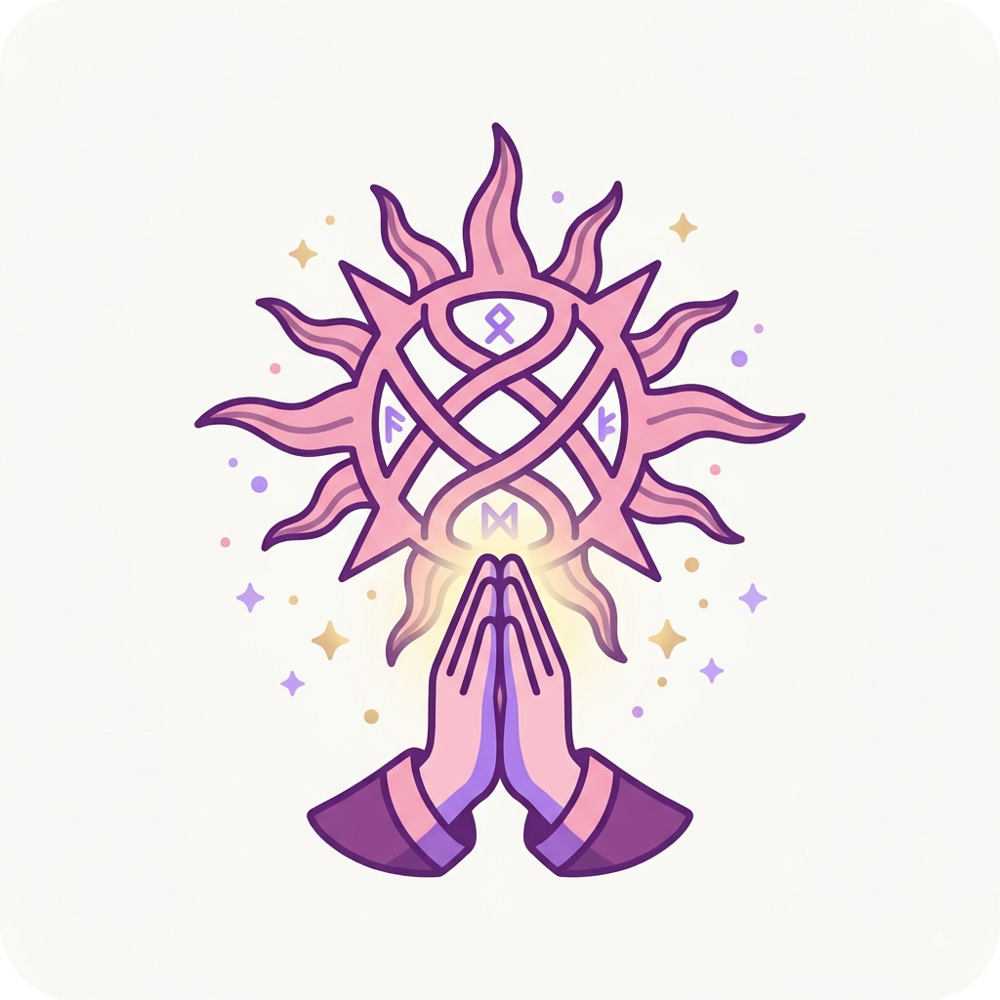
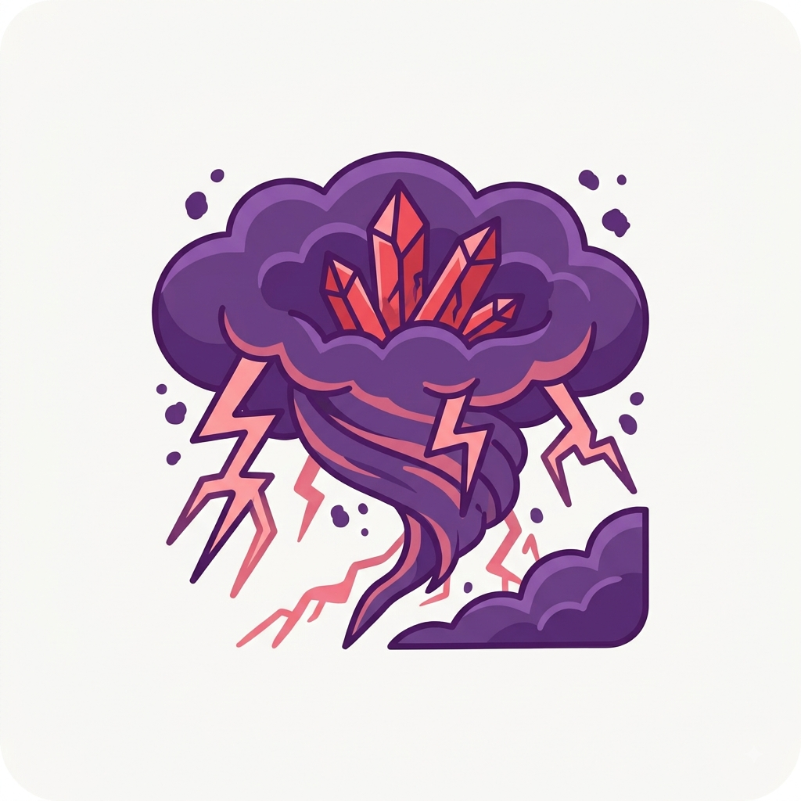
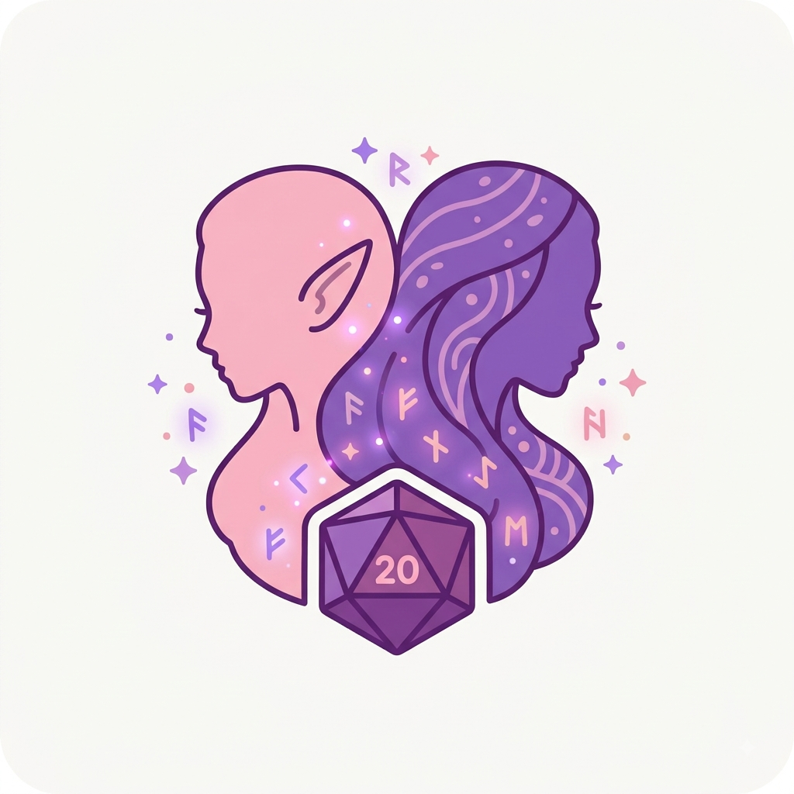
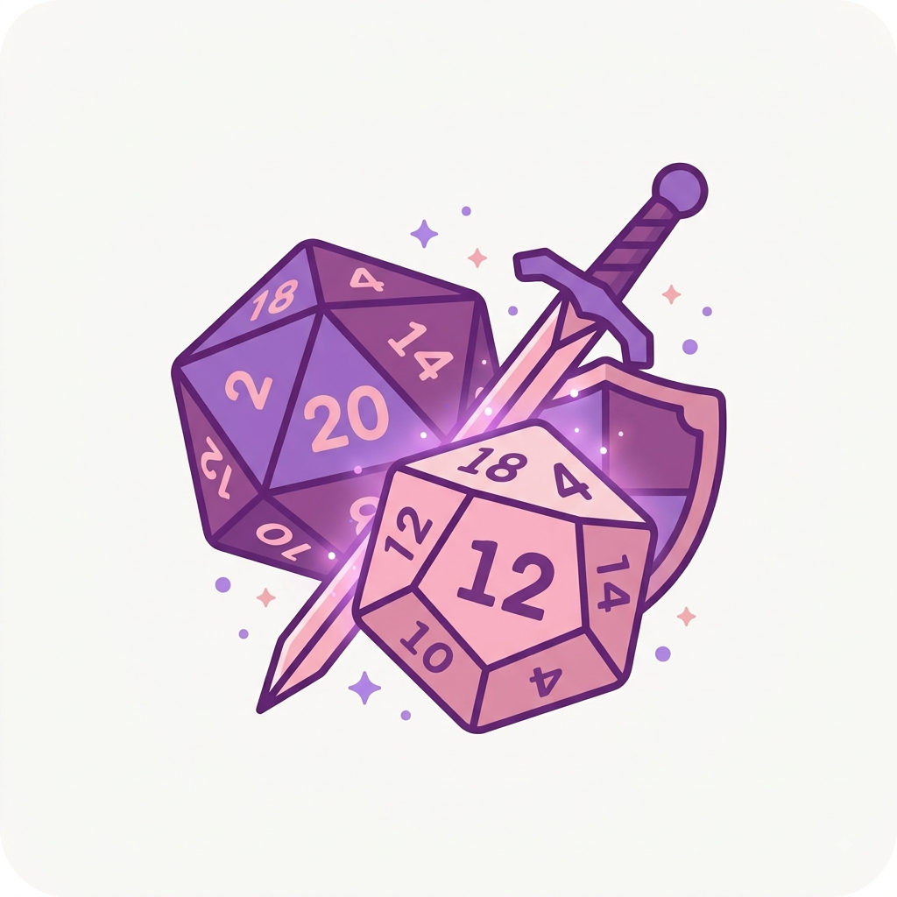
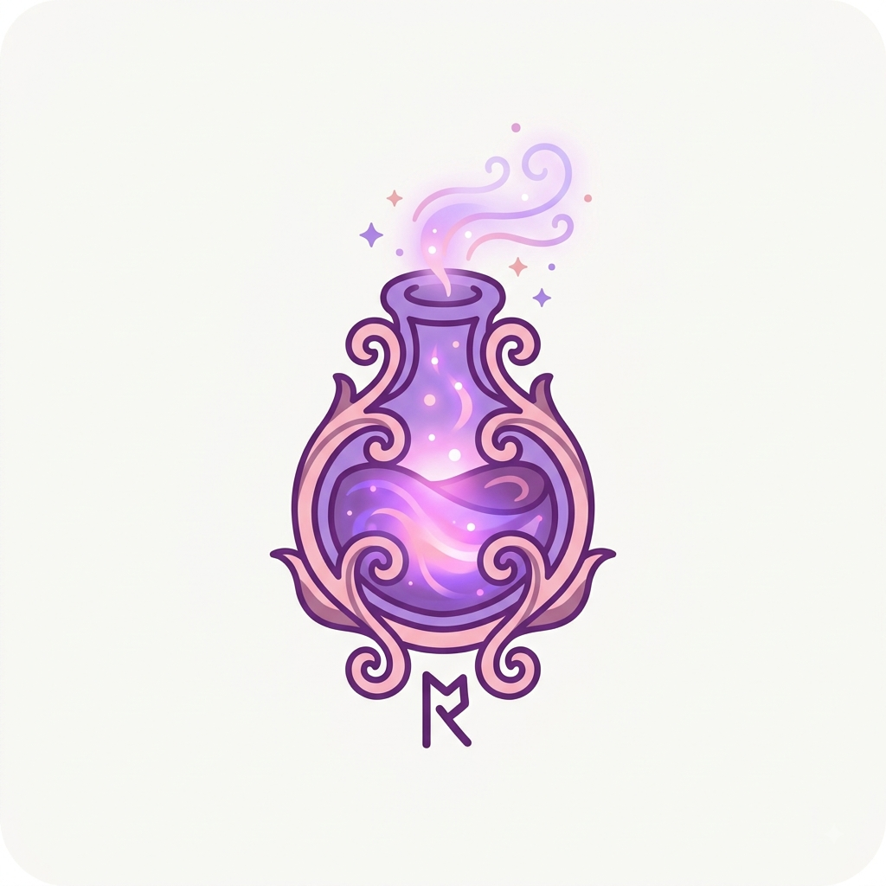

Como jogar de Arcanista em T20
Por: Nicolly Municky Traigel da Silva
O Arcanista é a classe perfeita para quem ama dominar os elementos e lançar magias poderosas. Seja Bruxo, Mago ou Feiticeiro, você será a maior fonte de dano do grupo!
Dicas, curiosidades e segredos sobre o universo de Tormenta20

Por: Nicolly Municky Traigel da Silva
O Arcanista é a classe perfeita para quem ama dominar os elementos e lançar magias poderosas. Seja Bruxo, Mago ou Feiticeiro, você será a maior fonte de dano do grupo!

Por: Nicolly Municky Traigel da Silva
Em Arton, os deuses intervêm diretamente na vida dos mortais. Escolher a divindade certa para o seu personagem pode conceder poderes concedidos fundamentais para a sobrevivência.
Fonte: Guia de Regras T20

Por: Nicolly Municky Traigel da Silva
A Tormenta é uma Invasão lefeu que corrompe a realidade em Arton. Áreas de Tormenta oferecem os monstros mais perigosos, mas também os tesouros mais insanos do jogo.
Fonte: Lore de Tormenta20

Por: Nicolly Municky Traigel da Silva
Humano, Lefou, Qareen ou Dahllan? A escolha da raça define seus atributos iniciais e habilidades únicas que farão toda a diferença no nível 1.
Fonte: Manual do Jogador

Por: Nicolly Municky Traigel da Silva
Entender a diferença entre Ação Padrão, Ação de Movimento, Ação Completa e Ação Livre é o primeiro passo para dominar a estratégia de combate em T20.
Fonte: Dicas de Mestre

Por: Nicolly Municky Traigel da Silva
Não saia para uma aventura sem seus catalisadores, poções e mantos arcanos. Itens esotéricos podem diminuir custos de PM e aumentar o dano das suas magias!
Fonte: Guia do Inventário